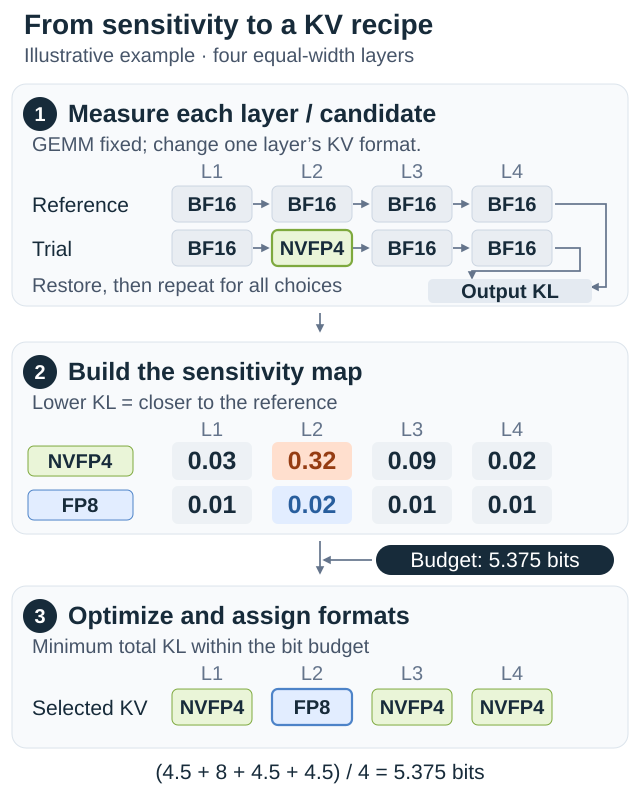
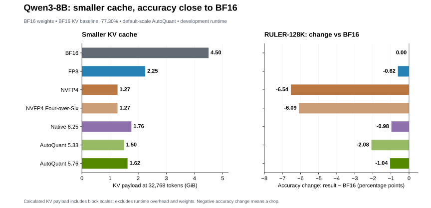
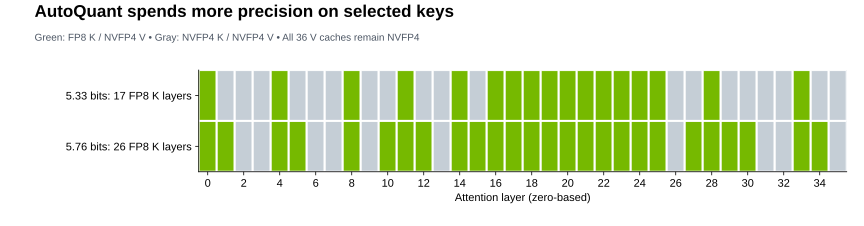

AutoQuant KV: Automatic Mixed-Precision KV Cache Quantization#
- Author:
Model Optimizer Team
- Date:
October 8, 2026
- Tags:
autoquantize, kv-cache, quantization, mixed-precision, modelopt
Introduction to AutoQuant#
AutoQuant automates mixed-precision quantization. Instead of assigning one format everywhere, NVIDIA Model Optimizer measures layer sensitivity and selects formats under a storage budget. Sensitive layers retain more precision; less sensitive layers use fewer bits.
GEMM AutoQuant applies this idea to the model’s matrix multiplications. KV AutoQuant extends it to attention keys and values, whose storage grows with context length and concurrent requests. The two searches can be combined, with independent budgets for weights and the KV cache.
Below, we explain the search workflow and API, then use Qwen3-8B as a case study of the accuracy and memory tradeoff.
How KV AutoQuant works#
KV AutoQuant searches over K/V format pairs using representative prompts and an average-bit budget.
Prepare candidates. The starter recipe uses constant scales and offers FP8 K/V (8 bits) and NVFP4 K/V (4.5 bits including block scales). The case study also includes FP8 K with NVFP4 V (6.25 bits for equal K/V widths). NVFP4 K with FP8 V is excluded because the current export path does not support that pair; this study did not evaluate its accuracy.
Score each choice. GEMM settings stay fixed in the reference and every trial: BF16 when starting from a BF16 model, or the existing quantized formats and scales. The reference disables K/V quantization in all eligible layers. Each trial changes only one layer’s K/V pair; KL divergence measures the change in output predictions. BF16 K/V is the reference, not an implicit solver choice.


Layer 2 receives FP8 because its upgrade gives the largest error reduction within the budget. Values are illustrative, with equal K/V widths across layers.#
Select one candidate per layer. An integer program minimizes total sensitivity under the storage constraint:
Here \(s\) is KL sensitivity, \(b\) is the width-weighted K/V bit cost
including scales, \(w\) is the layer’s total K/V width, and \(B\) is
effective_bits. Layers matched by disabled_layers are preserved and
excluded from the budget.
Apply and reuse. Validate the assembled model on held-out tasks: summed sensitivity is an estimate of combined error. A saved search checkpoint lets you change the budget without rescoring, provided you restart from the same pre-search model state and keep scoring data, candidates, and scales unchanged.
API and examples#
KV AutoQuant uses modelopt.torch.quantization.auto_quantize with
cost_model="kv_cache" and method="kl_div". Given a Hugging Face causal
LM and a batch-size-one calibration loader yielding device-placed
input_ids and attention_mask tensors:
import modelopt.torch.quantization as mtq
from modelopt.recipe import load_recipe
cfg = load_recipe(
"general/auto_quantize/kv_fp8_nvfp4_cast_kl_div_at_5p4bits"
).auto_quantize
def forward_step(model, batch):
logits = model(**batch, use_cache=False).logits
return logits[batch["attention_mask"].bool()]
model, search_state = mtq.auto_quantize(
model.eval(),
constraints={"cost_model": "kv_cache", "effective_bits": 5.4},
quantization_formats=[
c.model_dump(exclude_none=True) for c in cfg.candidate_formats
],
data_loader=calib_loader,
forward_step=forward_step,
disabled_layers=cfg.disabled_layers,
num_calib_steps=len(calib_loader),
num_score_steps=min(len(calib_loader), cfg.score_size),
method="kl_div",
checkpoint="kv_search.pth",
)
For search and Hugging Face export, use the shipped example. In a CUDA environment, install a checkout containing ModelOpt #2272 and #2273:
git clone https://github.com/NVIDIA/Model-Optimizer.git Model-Optimizer-autoquant-kv
cd Model-Optimizer-autoquant-kv
git checkout 1d392999b45626f9c06ff0bc9797b03529fe24e3
python -m pip install -e '.[hf]'
python -m pip install -r examples/hf_ptq/requirements.txt
mkdir -p outputs/qwen3-8b-kv
python examples/hf_ptq/hf_ptq.py \
--pyt_ckpt_path Qwen/Qwen3-8B \
--recipe general/auto_quantize/kv_fp8_nvfp4_cast_kl_div_at_5p4bits \
--dataset cnn_dailymail --calib_size 128 --calib_seq 512 --batch_size 1 \
--kv_auto_quantize_checkpoint outputs/qwen3-8b-kv/search.pth \
--export_path outputs/qwen3-8b-kv/hf
The starter recipe searches full FP8 K/V and full NVFP4 K/V with constant
scales. This small example demonstrates the workflow; use representative data
for an application recipe. Preserve hf_quant_config.json and exported
scales when serving with a compatible runtime.
Combining KV and GEMM AutoQuant#
Score KV candidates on the GEMM configuration you will serve. If GEMMs will be quantized, apply GEMM AutoQuant or fixed PTQ first. KV-only search is useful for BF16 deployments, controlled KV studies, or models whose GEMMs are already quantized.
A composed recipe runs GEMM AutoQuant first, then KV AutoQuant. The shipped example uses gradient-based NVFP4/FP8 GEMM search, freezes its selected weight/activation quantizers and calibrated tensors, then runs forward-KL KV search. Its 5.4-bit weight and 5.4-bit KV targets constrain separate storage domains; this is a sequential search, not one joint bit budget.
Use the command above with the following recipe and separate search-state files, plus a fresh export directory:
--recipe general/auto_quantize/nvfp4_fp8_gradient_then_kv_fp8_nvfp4_cast_kl_div_at_5p4bits \
--auto_quantize_checkpoint gemm_search.pth \
--kv_auto_quantize_checkpoint kv_after_gemm_search.pth
Changing the GEMM configuration requires recomputing KV sensitivity with a new
checkpoint. The
HF PTQ guide
describes both compositions. Serving support must cover the combined weight
and KV formats; an export marked kv_cache_deployment_supported: false
requires additional runtime support.
Mixed-precision results#
In our Qwen3-8B case study, AQ at 5.76 effective KV bits reduces modeled cache payload by 64.0% versus BF16, with a −1.04 percentage-point change on RULER-128K, compared with −6.54 for uniform NVFP4. These results isolate KV quantization: all model weights remain BF16. They do not measure the composed GEMM+KV recipe above.


BF16 shows accuracy (%); every recipe column shows result minus BF16 in percentage points. Negative means an accuracy drop; positive means an improvement. Differences use unrounded scores. AutoQuant results use only default K/V scales of 1.0.
Benchmark |
BF16 (%) |
FP8 |
NVFP4 |
NVFP4 4/6 |
Native 6.25 |
AQ 5.33 |
AQ 5.76 |
|---|---|---|---|---|---|---|---|
AIME2025 |
67.03 |
-0.42 |
— |
— |
-0.83 |
-1.88 |
-0.26 |
AIME2026 |
66.20 |
+0.73 |
-0.05 |
-0.21 |
+1.09 |
+0.10 |
-0.63 |
GPQA |
59.15 |
+0.65 |
-1.24 |
-1.48 |
-0.58 |
-1.06 |
-0.21 |
LiveCodeBench |
55.26 |
+0.33 |
-1.90 |
-0.99 |
+0.19 |
-0.55 |
-0.55 |
IFBench |
32.87 |
+2.60 |
-1.00 |
-1.47 |
+0.93 |
+0.67 |
-0.07 |
RULER-128K |
77.30 |
-0.62 |
-6.54 |
-6.09 |
-0.98 |
-2.08 |
-1.04 |
SciCode |
20.38 |
-1.15 |
-3.48 |
-2.70 |
-0.83 |
-0.74 |
+0.10 |
Native 6.25 is a fixed mixed-precision layer map. AQ 5.33 and AQ 5.76 are AutoQuant allocations at their achieved bit costs. NVFP4 4/6 uses Four-over-Six block-scale selection. AQ 5.76 uses 7.8% less KV payload than Native 6.25, with accuracy within 0.63 points of BF16 on AIME2025, AIME2026, GPQA, LiveCodeBench, and IFBench.
The study searched FP8 K/V, FP8 K with NVFP4 V, and NVFP4 K/V. Both AQ maps keep all values in NVFP4; 17 of 36 layers use FP8 keys at 5.33 bits, and 26 at 5.76 bits. Their requested budgets were 5.375 and 5.8125 bits.


The study used a development runtime with asymmetric K/V support, beyond the starter recipe’s candidate menu. See the vLLM integration for the per-layer FP8/NVFP4 path. Payload calculations include block scales but exclude runtime overhead and weights; they are not total GPU-memory or throughput measurements.
All comparisons use the same development vLLM image (TP1/DP4) and matched settings per benchmark. Dashes withhold unmatched AIME2025 controls. SciCode counts missing/unsuccessful generations as failures in 2,704 trials per run; Native 6.25 averages three runs. Differences are point estimates, not significance claims. Study checkpoints and runtime are not distributed with this post.